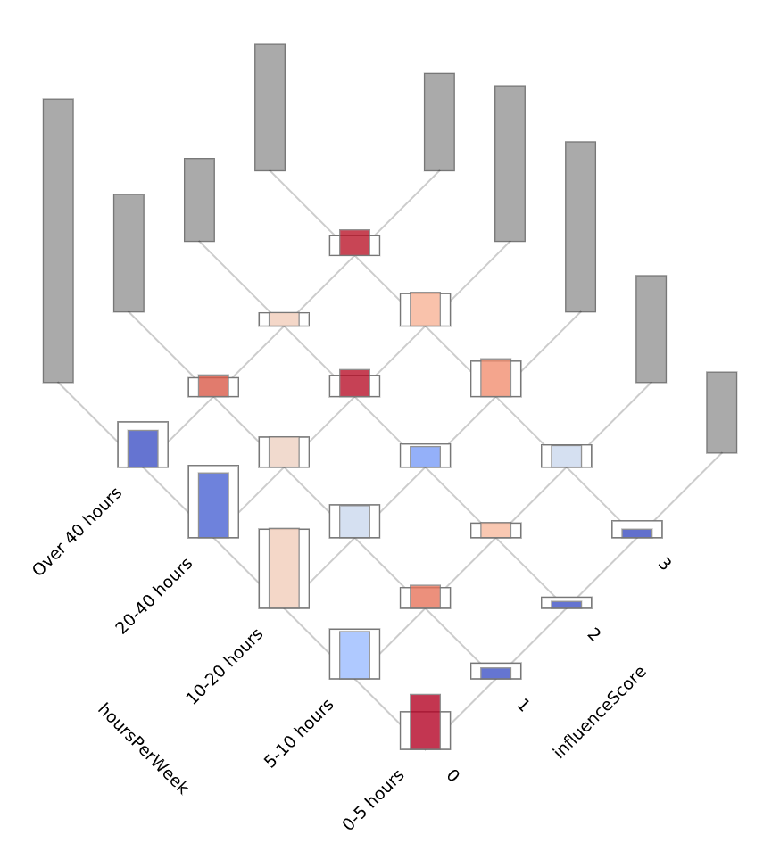

Correlation heat maps can effectively provide an overview of the
relationships between a categorical variables with a large number of
levels, but they are not ideal for handling a variables with only a
few levels for two main reasons. First, while color variation may be
able to convey coarse relationships, the human eye has a very
limited capacity to understand the scale of differences
encoded with color alone. Second, a simple heat map cannot easily
depict uncertainty, which requires adding a third dimension to what
is effectively a two dimensional image.
The graph at the right overcomes these problems by presenting
correlation information as a series of glyphs on a grid. At each
point on the grid, the white box outline indicates the number of
observations we'd expect to see by chance, and the solid colored bar
indicates the number we actually observe. The hue of the bar
indicates whether our observation is lower (blue) or higher (red)
than expected, and the saturation of the color indicates the
statistical significance of the difference from expectation. Rather
than presenting correlations with color alone, this visualization
encodes key information in lengths, which allows the human
visual system to much more easily make comparisons and judgments
about scale.
Finally, by rotating the grid 45 degrees, we can easily show the
marginal distributions of the observations in the gray bars
along the grid's edges, while still keeping the important semantic
length information running along the vertical axis to facilitate
comparisons between all of the items represented.